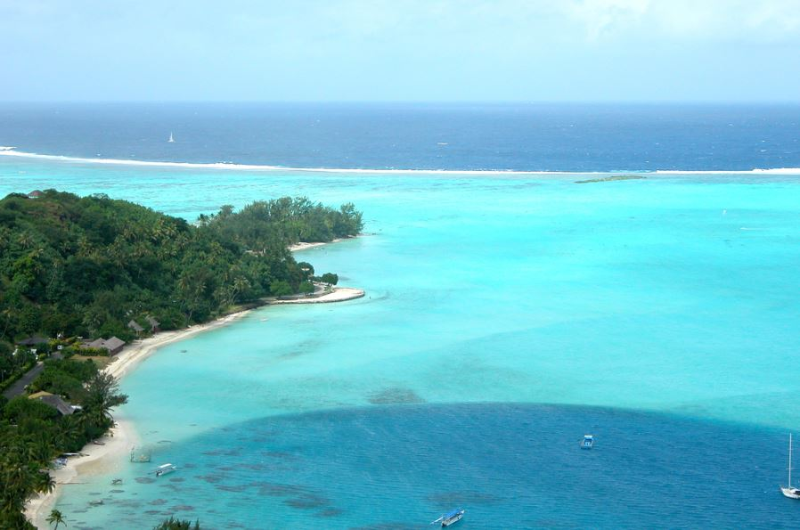

"Liberté, égalité, fraternité"
Francia (en francés, la France), oficialmente la República Francesa (République française) es un Estado soberano, miembro de la Unión Europea. Su territorio metropolitano o continental se ubica en Europa Occidental, limitando con Andorra, España, Mónaco, Italia, Suiza, Alemania, Luxemburgo y Bélgica. Además, posee diversos territorios en otras partes del mundo, incluyendo África, Norteamérica, Sudamérica y Oceanía. Francia es un país con una rica historia, clave en la formación de la cultura occidental y que atrae cada año a millones de turistas que desean recorrer tanto sus ciudades como sus bellezas naturales.
Topografía de Francia – Fuente: Wikipedia
Francia es una gran llanura, drenada por grandes ríos y separada del resto de países por un relieve rico y grandioso. Los Pirineos y los Alpes destacan sobremanera, pero el Macizo Central también es digno de visita, de hecho, tal vez nos sorprenda más gratamente.
El norte plano y lluvioso, donde la bruma abunda, el centro frío y seco, el Atlántico húmedo que recuerda al norte español, el sur Mediterráneo y ventoso y después Córcega, la Île de Beauté, la isla de la belleza, todo es una propuesta de viaje de ensueño para ir a visitar.
Además de la Francia metropolitana, el territorio francés se extiende por los cinco continentes. En América, las pequeñas islas de Saint Pierre et Miquelon se encuentran junto a Terranova. En el Caribe nos encontramos con los departamentos de Guadalupe, Martinica y los territorios especiales de Saint Barth (antigua colonia sueca) y la mitad de la Isla de Saint Martin (compartida con los Países Bajos), todos ellos destinos turísticos. En América del sur, la Guayana Francesa es conocida, sobre todo, por albergar la base de lanzamiento de cohetes europeos en Kourou. La Agencia Espacial Europea posee de está manera un centro de lanzamiento ideal, situado muy cerca del ecuador.

© Foto de Steve Mariani, Bora-Bora en la Polinesia francesa, 2009. Imágen extraida de https://blog-francia.com/wp-content/uploads/2009/03/bora-bora-polinesia-francia.jpg
En la costa pacífica de América a la altura de México se encuentra el pequeño atolón coralino de Clipperton, también territorio francés. En el Pacífico, una miríada de islas constituye la Polinesia francesa, con Tahití, paraíso ideal e idealizado. El archipiélago de Wallis y Futuna forma otro departamento de ultramar. Y para terminar, las islas de Loyauté forman Nueva Caledonia, territorio especial. En el Indico, Francia posee dos departamentos, La Reunión, situado al sureste de Madagascar y también gran destino turístico y la isla de Mayotte en el archipiélago de las Comores.
Francia presenta una gran diversidad de climas, por lo que las temperaturas dependen de la región y el mes en el que la visites. Las zonas de la costa occidental de Francia presentan un clima cálido y con lluvias durante todo el año, mientras que en el interior, los veranos son más calientes e inviernos más fríos y con escasas lluvias en la zona sur del país.
- Primavera: comienza un 21 de marzo, y dura habitualmente hasta el 21 de junio. - Verano: comienza el 21 de junio y finaliza el 21 de septiembre. - Otoño: inicia el 21 de septiembre y finaliza el 21 de diciembre. - Invierno: empieza desde el 21 de diciembre hasta el 21 de marzo.
Para mayor información, haga click en el siguiente vínculo https://www.viajarafrancia.com/clima-de-francia/